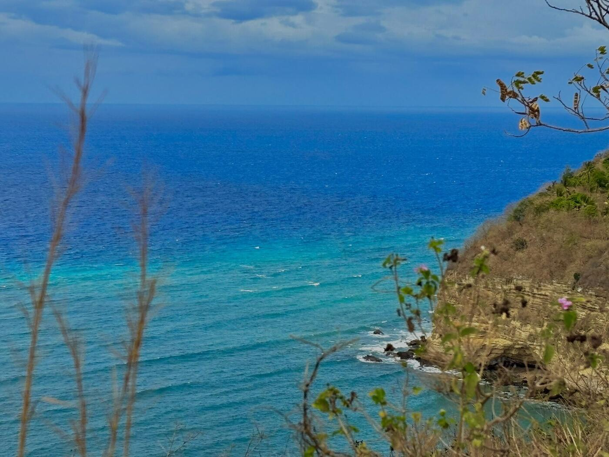
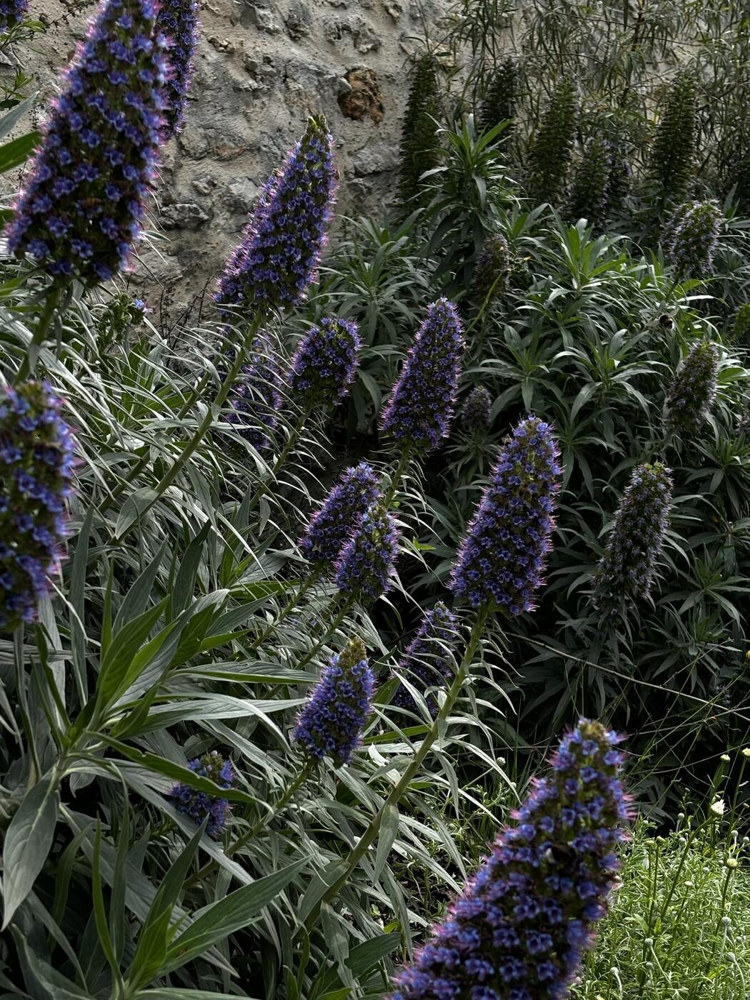

Journal visuel — MontpellierVoir autrement
Voir autrement
les choses simples.
Des paysages, des lumières et des instants saisis entre deux moments. Bienvenue dans mon regard sur le monde.

Journal visuelLà où la lumière s'arrête.

Appareil photo iPhone Montpellier & ailleurs53 photographies
Deux façons de regarderDes images,
Des images,
des histoires.
Deux collections, un même goût pour les instants vrais et les détails qui passent souvent inaperçus.

Le studio créatifEt si vous créiez
Ouvrir le studio Et si vous créiez
votre propre image ?
Importez une photo, ajustez les couleurs, appliquez un filtre et repartez avec votre création.